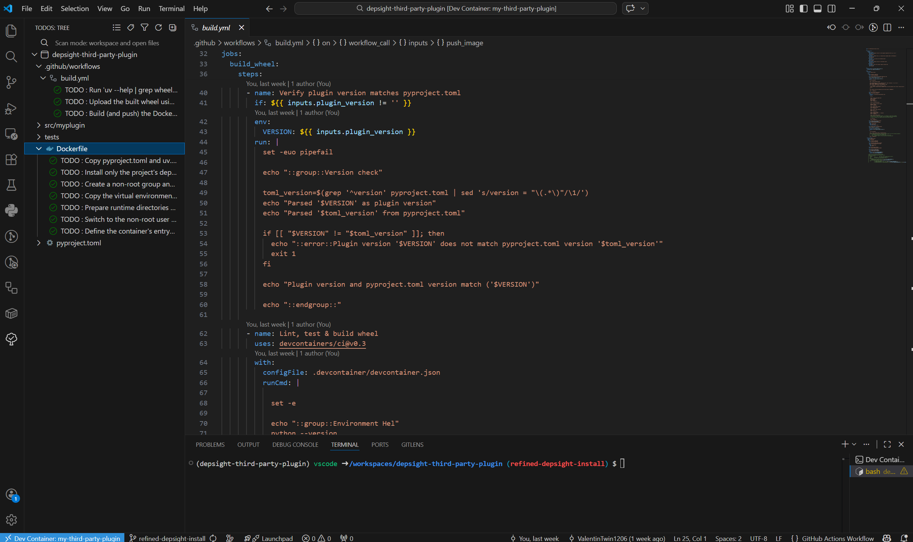
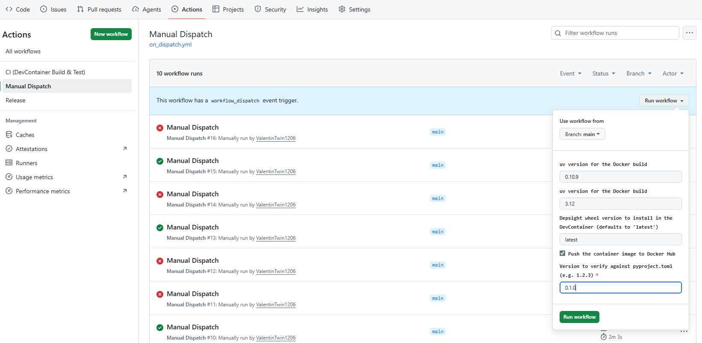

Task 2: Package and Publish Your Plugin
Task
With a working plugin implementation in place, your plugin is ready for packaging and distribution. Your next task is to produce a Python wheel and an OCI container image from your plugin. To do so, refine the provided Dockerfile and GitHub Actions workflow build.yml, push your changes to your GitHub remote, and trigger the workflow to build and publish both artifacts.
Hints
Prerequisites: Docker Hub Repository and Credentials
Before running the workflow, make sure you have created a Docker Hub repository and configured your Docker credentials as GitHub Secrets and Variables.
Inline TODOs
The template repository already includes a Dockerfile and a GitHub Actions workflow script build.yml. Follow the inline TODO statements in both files to complete them. The expected outcome is a container image published to DockerHub and a Python wheel attached to a 1.0.0 release on your GitHub repository.

Build and Push Image
Workflow Dispatch
The repository provides a manual trigger for testing the build without publishing. Use this to verify your Dockerfile and workflow configuration before creating a release. To trigger the Workflow Dispatch, navigate to the Actions tab in your GitHub repository, select the Manual Dispatch workflow, and click Run workflow. Set the version to match the one in pyproject.toml and leave the remaining inputs at their defaults.

GitHub Release
Once the build succeeds, create a GitHub release to push the image to Docker Hub and the wheel to the release assets:
- Set the
versionfield in yourpyproject.tomlto1.0.0. - Navigate to your repository on GitHub and click Releases in the right sidebar.
- Click Draft a new release.
- Click Choose a tag, type
1.0.0, and select Create new tag on publish. - Set the release title to
1.0.0. - Click Publish release.